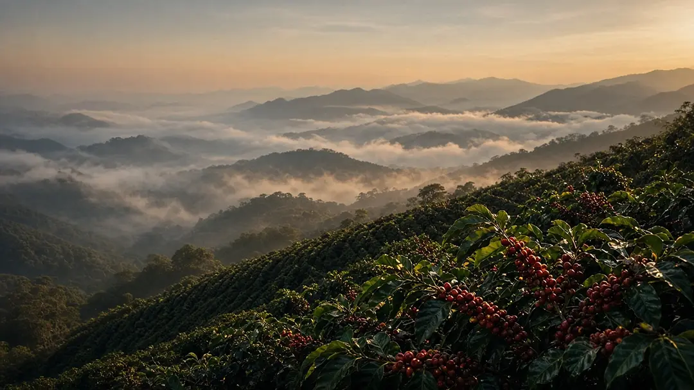

Kapitel IUrsprung
Alles beginnt auf 1.850 Metern.
Im Hochland von Huila reifen die Kirschen langsam, weil die Nächte kühl sind. Das gibt der Bohne Zeit für Süße. Wir kaufen direkt bei drei Familienbetrieben, die wir jedes Jahr im Februar besuchen.
- Höhe
- 1.850 m
- Partnerhöfe
- 3